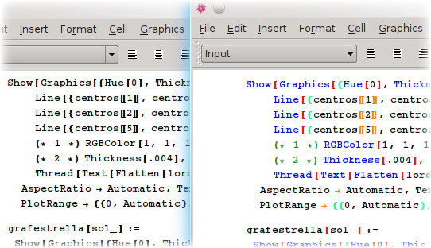
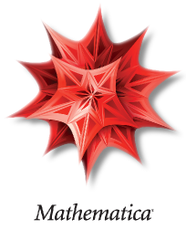

Mejoras de resaltado a los notebooks (2003 - 2004)¶
|  |  | |
Este proyecto nació en el 2003, cuando la versión actual de Mathematica era la 4.2. En esa época estaba enseñándoles el programa a dos primitos muy inteligentes, que aún estaban en el colegio. Mientras lo hacía, noté que la falta de resaltado para el código que escribían en el notebook les dificultaba mucho el aprendizaje del lenguaje, aunque les parecía muy interesante el entorno [1]. En busca de soluciones encontré el código de Luc Barthelet, que agregaba algunas opciones de resaltado a través de un botón llamado Beatiful. Con base en él, diseñé un paquete y un conjunto de botones que permitían resaltar todo un notebook y que añadían más posibilidades de resaltado que el botón de Luc, junto con un atajo de teclado para reaplicarlo continuamente. Dado que no es posible tener acceso al funcionamiento interno de Mathematica, no pude encontrar ninguna forma de aplicar el resaltado en tiempo real. Lo que hace el paquete es modificar el color y estilo del código en el notebook, así que cuando el usuario escribe nuevos comandos y funciones sobre el código actual, el resaltado usualmente se estropea y se hace necesario reaplicarlo. Los resultados fueron muy buenos y aún considero que el paquete es muy útil para publicar notebooks en la web, por lo que lo he ido actualizando para que funcione con cada nueva versión de Mathematica desde entonces. El código puede descargarse desde este link y pueden seguirse los cambios que le voy realizando en su repositorio de Bitbucket.
|